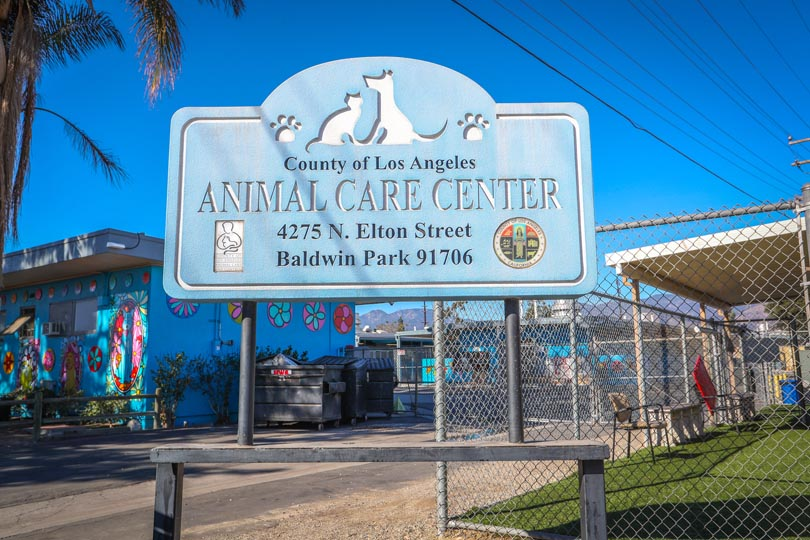

Welcome to LA Pet Adoption
Find your perfect companion at LA Pet Adoption Services. We're dedicated to matching loving homes with pets in need.
Why Adopt?
- Save a life
- Get a pre-screened pet
- Cost-effective option
- Support local animal welfare
Adoption Process
| Step | Description |
|---|---|
| 1 | Browse available pets |
| 2 | Submit application |
| 3 | Meet your potential pet |
| 4 | Complete adoption |